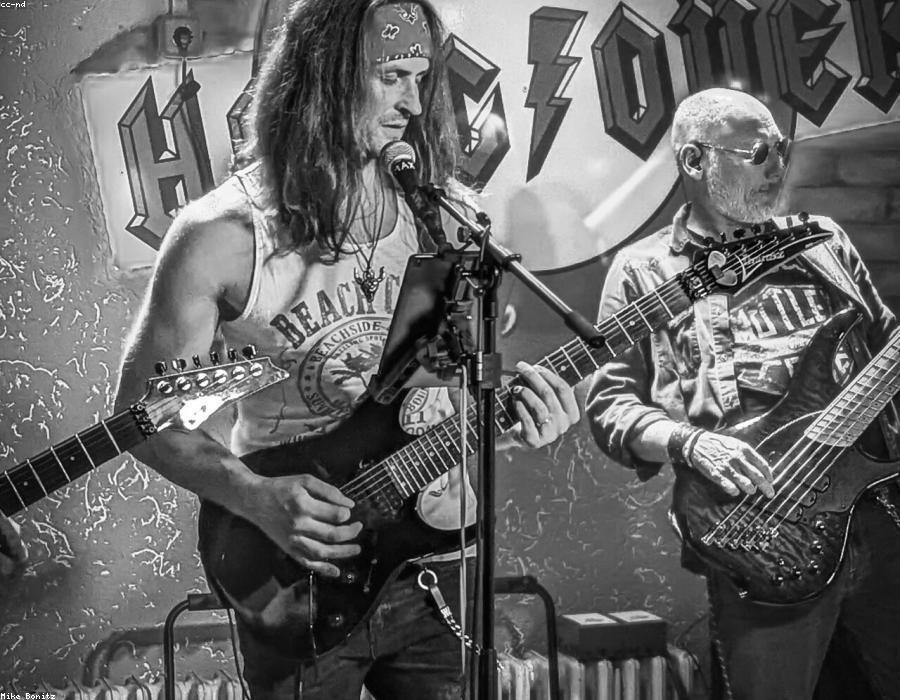

Étude de cas — Identité visuelle & motion
Donner un visage vivant à un festival de musique électronique : une identité qui pulse, se déforme et réagit au son.

Radar est un jeune festival de musique électronique rémois. Après trois éditions, l'événement avait gagné un public fidèle mais restait invisible : un logo différent chaque année, aucune cohérence entre l'affiche, les réseaux et la scène.
L'enjeu : construire une identité reconnaissable au premier coup d'œil, capable de vivre autant sur un mur que sur un écran de smartphone ou un écran géant en fond de scène.
Le point de départ : le balayage d'un radar. Un système graphique construit autour d'ondes concentriques et d'une typographie condensée qui se dilate au rythme de la musique.
Décliné en motion, le logo devient une onde qui réagit au son ; figé, il structure les affiches et la signalétique. Une palette contrastée — cobalt, corail, citron — assure la lisibilité de jour comme de nuit.
« Stéphane a compris notre festival mieux que nous. L'identité vit, elle bouge, elle est devenue notre signature. »